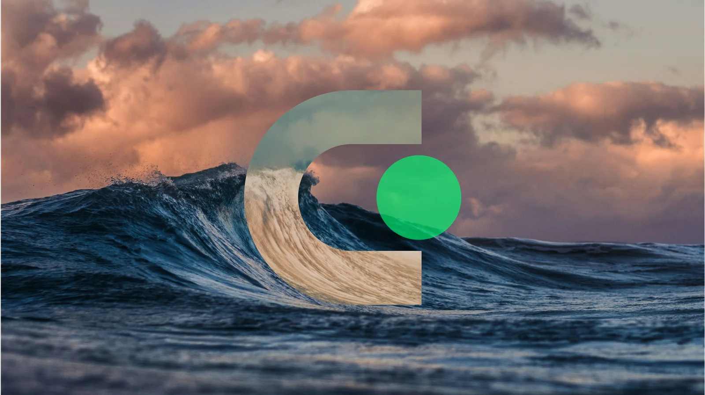
Creative direction & strategy
The most curious, most inventive, most determined designer money can buy
I make a living helping people see their own work presented in ways that make them proud. I want to be the Samwise to your Frodo. The Hermione to your Harry.
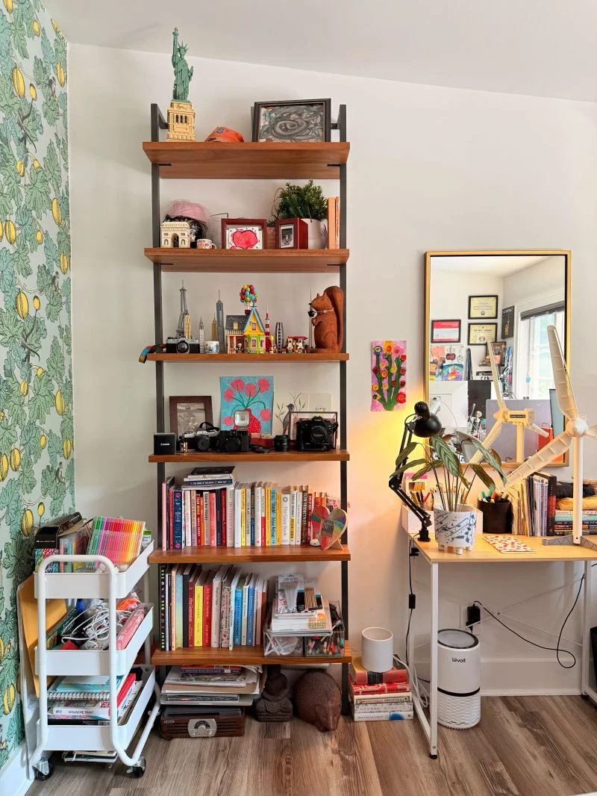
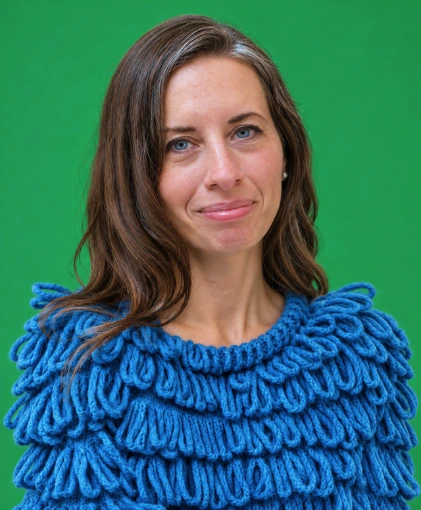
a view of my office you’ll see in our calls!
I started my creative studio, Great Big Yarn, to put my superpower to work for you: getting obsessively curious about what you do, whether that’s grid-scale storage, EV supply chains, carbon removal or energy market intelligence. I’ve got “big ears.” I do a lot of listening to your needs and your audience’s needs. Then I go away to wander, explore, improvise, and refine. I turn what I learn into designs that help other people get it, too.
Selected work
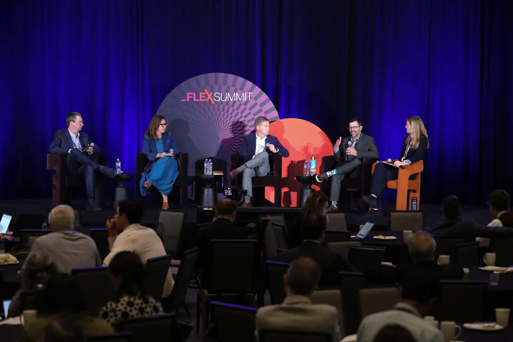
Latitude Media
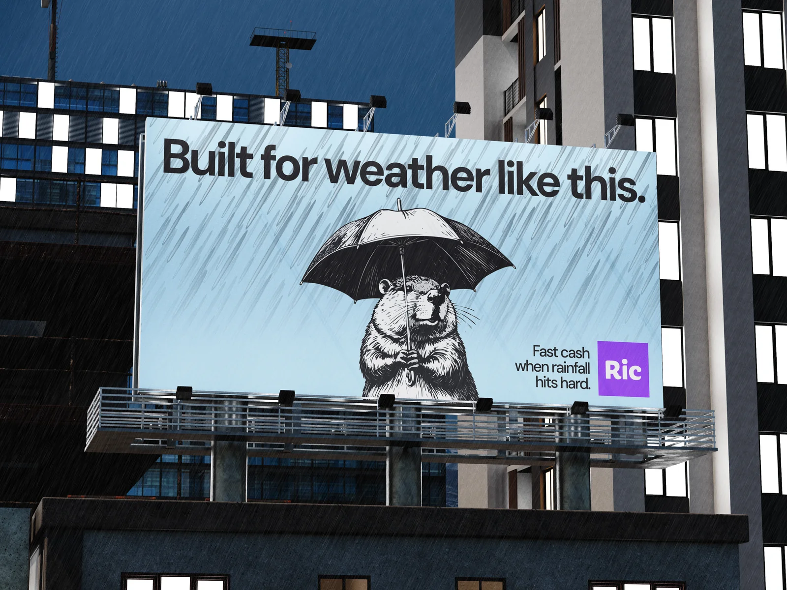
Ric Benefits
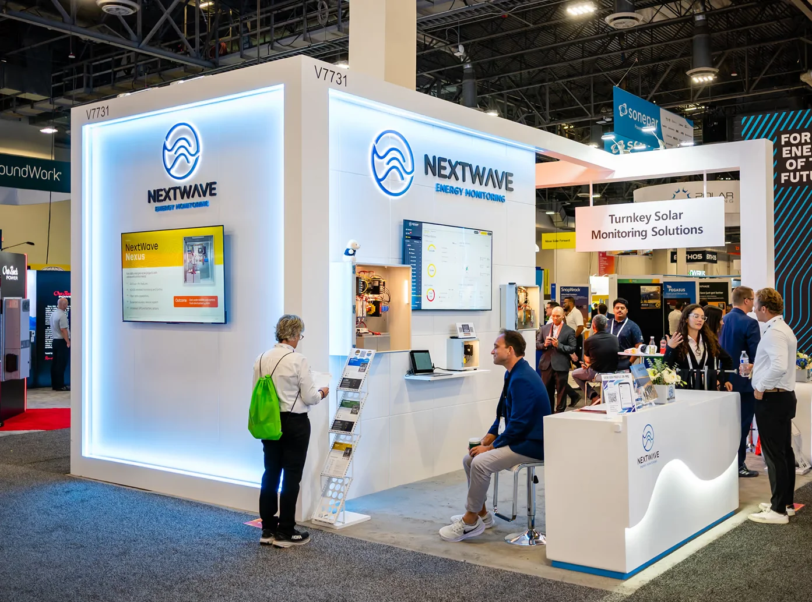
NextWave Energy Monitoring
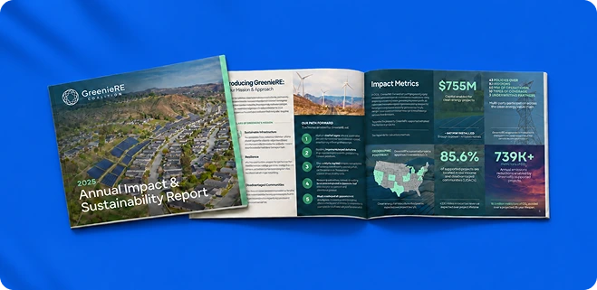
GreenieRE
At your service
What people hire me for
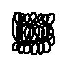
Brand Strategy
I dig into your business and the people you need to reach (a lifetime of being nosey has prepared me well for this), helping you find a position you can stand behind.
Brand identity
You need a logo for your new company. Or you want to refresh (or “glow up,” as the kids like to say) your current one. I do this, along with building out your entire visual world with typography, colors, imagery, and all the details that make a brand feel like itself.
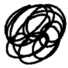
Campaigns + launches
You’re getting ready to launch or attend something, and there’s a lot riding on it. I have a lot of experience developing creative concepts and making all the pieces work together, from the first announcement to the event floor.
Website design
Your website has a job to do. That doesn’t mean we have to squeeze all the life out of it. I arrived on the glorious World Wide Web in the ’90s and promptly made myself at home. It was weird and wonderful. Today, I design websites that make it easy for people to find what they need, with enough personality to make them want to stick around. Life’s too short to put more mediocre websites into the world.
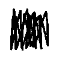
Presentations
You know that old adage about getting dressed, looking in the mirror, and taking one thing off before you leave the house? Putting together a strong deck is pretty much the same exercise in restraint. I help folks figure out what to say and how to show it.
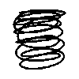
Toolkits + guidelines
Your new branding looks great, but how the hell do you actually use it? I help you and your team put it to work, with practical guidance and templates for social graphics, documents, sales materials, and the like.
Kind words
Some kind words from folks I’ve worked with
Melissa was an exceptional partner and a true extension of our communications team at ZETA. Throughout our time working together, she brought creativity and fresh ideas to every campaign, and her positive, can-do attitude made her a joy to work with. Many ideas would never have become reality without her.
Melissa from the DG+ team was great to work with on this critical project. She took in all our input and ongoing feedback, and created a design and deck that was well beyond our expectations and something we were confident to bring out to market as a first-class representation of our brand and ambitions.
I contacted Melissa with an important, last-minute assignment to build and design a website. I was concerned that she wouldn't have enough time but I was beyond pleased with the result. Throughout the intense 48-hour process, she was incredibly responsive and clear in her communication, going the extra mile to meet my various requests. The design itself was creative, clear and sharp. It was such a pleasure working with her and I couldn't recommend her more.
Life is short.Let’s design something good.
Tell me what you’re building, what’s changing, or where you’re stuck.
Let’s chat